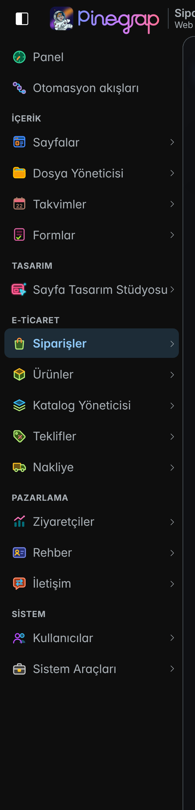
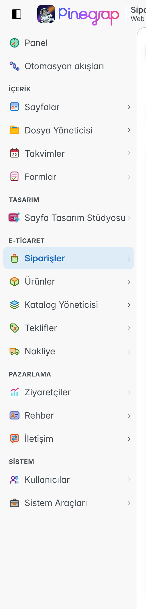
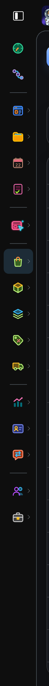
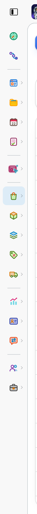

Geniş hâl, 250 px. İç içe girilen yapı, satırlar, başlıklar ve sıra aynı; değişen yalnız satır simgeleri. Deneme sitesinde Çalışma alanı ve Muhasebe kapalı olduğu için o satırlar bugünkü resimde yok.


Öneri A'nın yirmi iki satırı, kategorisinin rengiyle. Değerlendirmelerim yalnız değerlendirici olan kişide görünür.
Yalnız simgeler. Başlık yerine ince çizgi; sayı yerine nokta.


Bir satıra girince: girişler bugünkü karolarıyla kalır, satırla aynı renkte.
Simge kıpırdamaz, büyümez, renk değiştirmez; değişen yalnız satırın zemini ve yazının kalınlığıdır.